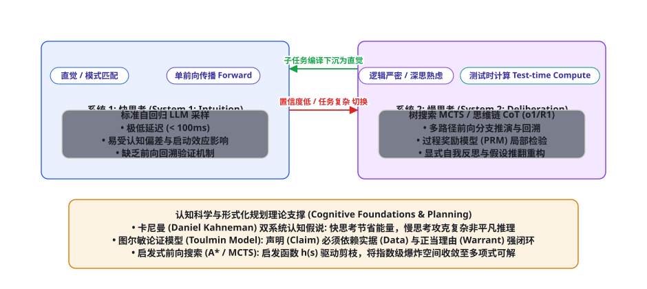
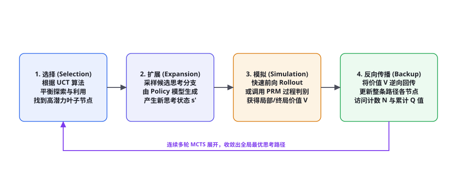

<!DOCTYPE html>
<html lang="zh-CN">
<head>
<meta charset="UTF-8">
<meta name="viewport" content="width=device-width, initial-scale=1.0">
<title>第 94 章 · 推理与规划的认知科学映射：双系统、前向搜索与反思 — AI Agent Cookbook</title>
<link rel="stylesheet" href="../assets/css/style.css">
</head>
<body>
<div id="progress"></div>

<aside class="sidebar">
  <div class="sidebar-head">
    <a class="logo-row" href="../index.html">
      <span class="logo-mark">AC</span>
      <span class="t">AI Agent Cookbook<span class="s">从入门到精通的智能体全景手册</span></span>
    </a>
    <div class="search-wrap">
      <span class="icon">🔍</span>
      <input id="searchInput" type="text" placeholder="搜索全书…" autocomplete="off">
      <kbd>/</kbd>
      <div id="searchResults" class="search-results"></div>
    </div>
  </div>
  <div class="toc-part"><div class="toc-part-head"><span class="num">0</span>导论<span class="chev">▶</span></div><div class="toc-part-body"><a href="chapters/ch001.html"><span class="cn">001</span>前言：为什么是 Agent，为什么是现在</a><a href="chapters/ch002.html"><span class="cn">002</span>如何使用本书：三条学习路径与阅读指南</a><a href="chapters/ch003.html"><span class="cn">003</span>Agent 通识：定义、心智模型与七十年简史</a></div></div><div class="toc-part"><div class="toc-part-head"><span class="num">1</span>基础篇：LLM 与提示工程<span class="chev">▶</span></div><div class="toc-part-body"><a href="chapters/ch004.html"><span class="cn">004</span>LLM 工作原理速成：Transformer 与注意力机制</a><a href="chapters/ch005.html"><span class="cn">005</span>Token、上下文窗口与采样策略</a><a href="chapters/ch006.html"><span class="cn">006</span>Prompt Engineering 系统指南</a><a href="chapters/ch007.html"><span class="cn">007</span>提示工程进阶：提示链、自洽性与元提示</a><a href="chapters/ch008.html"><span class="cn">008</span>结构化输出：JSON Mode、Schema 与受约束解码</a><a href="chapters/ch009.html"><span class="cn">009</span>LLM 的能力边界：幻觉、知识与推理局限</a><a href="chapters/ch010.html"><span class="cn">010</span>Embedding 与向量空间基础</a><a href="chapters/ch011.html"><span class="cn">011</span>开发环境与 SDK 速览：OpenAI / Anthropic / 开源模型</a><a href="chapters/ch012.html"><span class="cn">012</span>API 工程实践：重试、限流、成本与流式</a><a href="chapters/ch013.html"><span class="cn">013</span>评测思维入门：科学地度量 LLM 输出</a></div></div><div class="toc-part"><div class="toc-part-head"><span class="num">2</span>核心机制篇<span class="chev">▶</span></div><div class="toc-part-body"><a href="chapters/ch014.html"><span class="cn">014</span>什么是 Agent：自主性光谱与感知-决策-行动</a><a href="chapters/ch015.html"><span class="cn">015</span>Agent Loop：大模型 Agent 的心脏</a><a href="chapters/ch016.html"><span class="cn">016</span>ReAct：推理与行动的交织范式</a><a href="chapters/ch017.html"><span class="cn">017</span>工具调用全景：从 Function Calling 到并行编排</a><a href="chapters/ch018.html"><span class="cn">018</span>规划机制：任务分解、Plan-and-Execute 与树搜索</a><a href="chapters/ch019.html"><span class="cn">019</span>记忆系统：短期、长期、情景与语义</a><a href="chapters/ch020.html"><span class="cn">020</span>RAG 从入门到进阶：分块、索引、检索与重排</a><a href="chapters/ch021.html"><span class="cn">021</span>RAG 进阶：HyDE、Self-RAG、GraphRAG 与 Agentic RAG</a><a href="chapters/ch022.html"><span class="cn">022</span>反思与自我改进：Reflexion、Self-Refine 与 Critic 模式</a><a href="chapters/ch023.html"><span class="cn">023</span>上下文工程：Context Engineering 的艺术</a><a href="chapters/ch024.html"><span class="cn">024</span>多 Agent 系统：拓扑、协作协议与角色分工</a><a href="chapters/ch025.html"><span class="cn">025</span>人机协同：审批、中断与恢复</a></div></div><div class="toc-part"><div class="toc-part-head"><span class="num">3</span>工程与框架篇<span class="chev">▶</span></div><div class="toc-part-body"><a href="chapters/ch026.html"><span class="cn">026</span>Agent 技术栈总览与选型决策树</a><a href="chapters/ch027.html"><span class="cn">027</span>从零手写最小 Agent：200 行 Python 的完整实现</a><a href="chapters/ch028.html"><span class="cn">028</span>LangChain 与 LangGraph 深度实战</a><a href="chapters/ch029.html"><span class="cn">029</span>OpenAI Agents SDK 与 Responses API</a><a href="chapters/ch030.html"><span class="cn">030</span>Claude Agent SDK 与 Claude Code 剖析</a><a href="chapters/ch031.html"><span class="cn">031</span>AutoGen / AG2：群聊式多智能体框架</a><a href="chapters/ch032.html"><span class="cn">032</span>CrewAI：角色驱动的多 Agent 团队</a><a href="chapters/ch033.html"><span class="cn">033</span>MetaGPT：软件公司隐喻与 SOP 多智能体</a><a href="chapters/ch034.html"><span class="cn">034</span>LlamaIndex：数据框架与 Agent 融合</a><a href="chapters/ch035.html"><span class="cn">035</span>低代码平台：Dify、Coze、n8n 与 Flowise</a><a href="chapters/ch036.html"><span class="cn">036</span>MCP：Model Context Protocol 详解与生态</a><a href="chapters/ch037.html"><span class="cn">037</span>Agent 互操作协议：A2A、AG-UI 与开放生态</a></div></div><div class="toc-part"><div class="toc-part-head"><span class="num">4</span>训练与强化篇<span class="chev">▶</span></div><div class="toc-part-body"><a href="chapters/ch038.html"><span class="cn">038</span>训练全景图：预训练 → SFT → RLHF → Agent 训练</a><a href="chapters/ch039.html"><span class="cn">039</span>SFT 指令微调实操：数据构建与 LoRA/QLoRA</a><a href="chapters/ch040.html"><span class="cn">040</span>RLHF 与 PPO：三阶段详解</a><a href="chapters/ch041.html"><span class="cn">041</span>DPO 及变体：IPO、KTO、SimPO、ORPO</a><a href="chapters/ch042.html"><span class="cn">042</span>RLAIF、Constitutional AI 与自我奖励</a><a href="chapters/ch043.html"><span class="cn">043</span>RLVR：可验证奖励的强化学习与推理范式</a><a href="chapters/ch044.html"><span class="cn">044</span>工具使用训练：Toolformer、Gorilla 与 ToolRL</a><a href="chapters/ch045.html"><span class="cn">045</span>Agent RL：WebRL、AgentGym、AgentTuning 与进化式训练</a><a href="chapters/ch046.html"><span class="cn">046</span>过程奖励与结果奖励：PRM、ORM 与奖励设计</a><a href="chapters/ch047.html"><span class="cn">047</span>合成数据工程：Self-Instruct、Evol-Instruct 与数据飞轮</a><a href="chapters/ch048.html"><span class="cn">048</span>蒸馏与小型化：让小模型拥有 Agentic 能力</a><a href="chapters/ch049.html"><span class="cn">049</span>Self-Play 与持续学习：Agent 的自我进化</a></div></div><div class="toc-part"><div class="toc-part-head"><span class="num">5</span>评测基准篇<span class="chev">▶</span></div><div class="toc-part-body"><a href="chapters/ch050.html"><span class="cn">050</span>Agent 评测方法论：静态到动态、过程到结果</a><a href="chapters/ch051.html"><span class="cn">051</span>代码 Agent 基准：SWE-bench 家族与 LiveCodeBench</a><a href="chapters/ch052.html"><span class="cn">052</span>Web 与 Computer-Use 基准：WebArena、OSWorld、Mind2Web</a><a href="chapters/ch053.html"><span class="cn">053</span>通用 Agent 基准：GAIA、AgentBench、τ-bench 与 BrowseComp</a><a href="chapters/ch054.html"><span class="cn">054</span>工具调用评测：BFCL、ToolSandbox 与 StableToolBench</a><a href="chapters/ch055.html"><span class="cn">055</span>安全评测：注入攻击基准与自动化红队</a><a href="chapters/ch056.html"><span class="cn">056</span>构建你自己的评测：沙箱、容器化与 CI 集成</a><a href="chapters/ch057.html"><span class="cn">057</span>LLM-as-Judge 与评测的可信度</a></div></div><div class="toc-part"><div class="toc-part-head"><span class="num">6</span>安全与对齐篇<span class="chev">▶</span></div><div class="toc-part-body"><a href="chapters/ch058.html"><span class="cn">058</span>Agent 威胁模型：攻击面全景</a><a href="chapters/ch059.html"><span class="cn">059</span>Prompt Injection 攻防：直接注入、间接注入与防线</a><a href="chapters/ch060.html"><span class="cn">060</span>权限与沙箱：最小权限、能力模型与执行隔离</a><a href="chapters/ch061.html"><span class="cn">061</span>数据外泄与供应链安全</a><a href="chapters/ch062.html"><span class="cn">062</span>越狱与滥用防治</a><a href="chapters/ch063.html"><span class="cn">063</span>幻觉治理与事实性工程</a><a href="chapters/ch064.html"><span class="cn">064</span>对齐与价值观：从 RLHF 到宪政 AI 的落地</a><a href="chapters/ch065.html"><span class="cn">065</span>治理、合规与责任：AI Act 时代的 Agent 运营</a></div></div><div class="toc-part"><div class="toc-part-head"><span class="num">7</span>多模态与具身篇<span class="chev">▶</span></div><div class="toc-part-body"><a href="chapters/ch066.html"><span class="cn">066</span>视觉语言模型与多模态 Agent 基础</a><a href="chapters/ch067.html"><span class="cn">067</span>GUI Agent：从 WebVoyager 到 Computer Use</a><a href="chapters/ch068.html"><span class="cn">068</span>移动与操作系统 Agent：AppAgent 与 OS-Copilot</a><a href="chapters/ch069.html"><span class="cn">069</span>具身智能导览：RT-2、PaLM-E 与 VLA 模型</a><a href="chapters/ch070.html"><span class="cn">070</span>游戏与仿真 Agent：MineDojo、Voyager 与 Genie</a><a href="chapters/ch071.html"><span class="cn">071</span>科学发现 Agent：Coscientist、ChemCrow 与 AI Scientist</a><a href="chapters/ch072.html"><span class="cn">072</span>语音 Agent 与实时多模态交互</a></div></div><div class="toc-part"><div class="toc-part-head"><span class="num">8</span>前沿专题篇<span class="chev">▶</span></div><div class="toc-part-body"><a href="chapters/ch073.html"><span class="cn">073</span>Deep Research：深度研究 Agent 架构解密</a><a href="chapters/ch074.html"><span class="cn">074</span>Coding Agent：从 Copilot 到 Devin 再到 Claude Code</a><a href="chapters/ch075.html"><span class="cn">075</span>Computer Use 与 Browser Use 前沿</a><a href="chapters/ch076.html"><span class="cn">076</span>长时程 Agent：小时级任务、压缩与 Checkpointing</a><a href="chapters/ch077.html"><span class="cn">077</span>World Models：Agent 的世界理解与想象</a><a href="chapters/ch078.html"><span class="cn">078</span>Agent 经济学：成本、延迟与质量的权衡</a><a href="chapters/ch079.html"><span class="cn">079</span>可观测性：Tracing、Eval 与监控</a><a href="chapters/ch080.html"><span class="cn">080</span>Agent 系统规模化：队列、并发与可靠性</a></div></div><div class="toc-part"><div class="toc-part-head"><span class="num">9</span>实战项目篇<span class="chev">▶</span></div><div class="toc-part-body"><a href="chapters/ch081.html"><span class="cn">081</span>项目 1：个人知识库问答 Agent（RAG 全流程）</a><a href="chapters/ch082.html"><span class="cn">082</span>项目 2：自动化数据分析师 Agent</a><a href="chapters/ch083.html"><span class="cn">083</span>项目 3：复刻 Deep Research 研究助手</a><a href="chapters/ch084.html"><span class="cn">084</span>项目 4：浏览器自动化 Agent</a><a href="chapters/ch085.html"><span class="cn">085</span>项目 5：代码审查与修复 Agent</a><a href="chapters/ch086.html"><span class="cn">086</span>项目 6：多 Agent 内容工厂</a><a href="chapters/ch087.html"><span class="cn">087</span>项目 7：客服工单 Agent（含人工升级）</a><a href="chapters/ch088.html"><span class="cn">088</span>项目 8：本地化 Agent（Ollama + 端侧模型）</a><a href="chapters/ch089.html"><span class="cn">089</span>生产化：部署、网关、缓存与成本控制</a><a href="chapters/ch090.html"><span class="cn">090</span>案例研究：Devin、Manus、Claude Code 与 Cursor 拆解</a></div></div><div class="toc-part"><div class="toc-part-head"><span class="num">10</span>理论基础篇<span class="chev">▶</span></div><div class="toc-part-body"><a href="chapters/ch091.html"><span class="cn">091</span>形式化基础：MDP、POMDP 与 Agent 数学语言</a><a href="chapters/ch092.html"><span class="cn">092</span>LLM 作为策略：In-context RL 与序列建模视角</a><a href="chapters/ch093.html"><span class="cn">093</span>搜索算法：从 BFS/A* 到 MCTS 与 LLM 结合</a><a href="chapters/ch094.html"><span class="cn">094</span>规划理论：经典规划、HTN 与 LLM+P</a><a href="chapters/ch095.html"><span class="cn">095</span>经典 Agent 理论：BDI、Soar、ACT-R 的遗产</a><a href="chapters/ch096.html"><span class="cn">096</span>概率与决策：贝叶斯视角与多臂老虎机</a><a href="chapters/ch097.html"><span class="cn">097</span>世界模型与生成式仿真</a><a href="chapters/ch098.html"><span class="cn">098</span>涌现、Scaling Laws 与 Agent 的未来能力</a></div></div><div class="toc-part"><div class="toc-part-head"><span class="num">11</span>论文库篇<span class="chev">▶</span></div><div class="toc-part-body"><a href="chapters/ch099.html"><span class="cn">099</span>论文阅读方法论：如何高效读 Agent 论文</a><a href="chapters/ch100.html"><span class="cn">100</span>奠基论文精读十篇</a><a href="chapters/ch101.html"><span class="cn">101</span>核心机制论文地图：记忆、RAG、规划与多智能体</a><a href="chapters/ch102.html"><span class="cn">102</span>训练与强化论文地图</a><a href="chapters/ch103.html"><span class="cn">103</span>评测与安全论文地图</a><a href="chapters/ch104.html"><span class="cn">104</span>2024-2026 前沿论文追踪清单（100 篇）</a></div></div><div class="toc-part"><div class="toc-part-head"><span class="num">12</span>项目与资源库篇<span class="chev">▶</span></div><div class="toc-part-body"><a href="chapters/ch105.html"><span class="cn">105</span>开源框架横评与选型决策树</a><a href="chapters/ch106.html"><span class="cn">106</span>50 个值得 Star 的开源 Agent 项目</a><a href="chapters/ch107.html"><span class="cn">107</span>数据集与基准资源大全</a><a href="chapters/ch108.html"><span class="cn">108</span>学习资源：课程、书籍、博客与社区</a><a href="chapters/ch109.html"><span class="cn">109</span>从本书到 GitHub：贡献指南与扩展路线</a></div></div><div class="toc-part"><div class="toc-part-head"><span class="num">13</span>面试与速查篇<span class="chev">▶</span></div><div class="toc-part-body"><a href="chapters/ch110.html"><span class="cn">110</span>Agent 工程师面试题库：基础 50 题精解</a><a href="chapters/ch111.html"><span class="cn">111</span>Agent 工程师面试题库：进阶 50 题精解</a><a href="chapters/ch112.html"><span class="cn">112</span>系统设计面试：设计 Deep Research / Coding Agent</a><a href="chapters/ch113.html"><span class="cn">113</span>术语表：300 条 Agent 核心术语速查</a></div></div>
  <div class="sidebar-foot">
    <span>v1.0 · 开源书籍</span>
    <button class="theme-toggle">🌙 深色</button>
  </div>
</aside>
<div class="scrim"></div>

<div class="topbar">
  <button class="menu-btn">☰</button>
  <span class="title">AI Agent Cookbook</span>
</div>

<main class="main">
  <div class="content">

    <nav class="crumb">
      <a href="../index.html">首页</a><span class="sep">/</span>
      <a href="../index.html#part-10">第十部分 · 理论篇</a><span class="sep">/</span>
      <span>第 94 章</span>
    </nav>

    <header class="chapter-header">
      <div class="chapter-meta">
        <span class="badge lv-高级">高级</span>
        <span class="badge tag">理论</span>
        <span class="badge tag">双系统理论</span>
        <span class="badge tag">前向搜索</span>
        <span class="badge tag">MCTS</span>
        <span class="badge">⏱ 约 60 分钟</span>
      </div>
      <h1>第 94 章 · 推理与规划的认知科学映射：双系统、前向搜索与反思</h1>
      <p class="lead">随着 OpenAI o1、o3 与 DeepSeek-R1 的惊艳问世，「长思维链（Long CoT）」与「测试时计算（Test-Time Compute Scaling）」彻底颠覆了传统大模型的研发范式。然而，这种在输出端自主展开数千字自言自语、反复自检纠错并探索分支的现象，其底层的认知科学与图搜索本质究竟是什么？本章我们将追根溯源，从丹尼尔·卡尼曼的《思考，快与慢》双系统认知理论出发，系统性建立从人类直觉联想（System 1）到慢速符号逻辑推演（System 2）的严格数学映射，并深入剖析蒙特卡洛树搜索（MCTS）、A* 启发式剪枝以及图尔敏论证模型对构建高确定性自主推理智能体的终极启示。</p>
    </header>

    <h2 id="kahneman-dual-system">卡尼曼双系统认知理论与大模型架构映射</h2>

    <figure class="figure">
      
      <figcaption><span class="fig-no">图 94-1</span>认知心理学双系统理论到现代大语言模型推理架构的系统性映射：系统 1（快思考）对应无搜索的单前向传播直觉模式匹配；系统 2（慢思考）对应测试时计算扩增（MCTS 树搜索、长思维链、过程奖励 PRM 校验与显式回溯）。</figcaption>
    </figure>

    <p>2002 年诺贝尔经济学奖得主丹尼尔·卡尼曼（Daniel Kahneman）在认知心理学名著《思考，快与慢》中，将人类大脑的心智运作抽象为两个协作但截然对立的子系统：</p>

    <div class="tbl-wrap">
      <table>
        <thead><tr><th>认知系统维度</th><th>人类认知生理特征 (Kahneman)</th><th>在现代 AI Agent 中的物理实现映射</th><th>优势与致命缺陷</th></tr></thead>
        <tbody>
          <tr><td><strong>系统 1: 快思考 (System 1)</strong></td><td>自动化、无意识、秒级反应、模式识别、极低能量消耗（如一眼识别人脸、计算 2+2=4）</td><td>基座模型的单次前向传播（Single Forward Pass），标准的 Greedy/Top-p 自回归采样</td><td>推理极快（&lt; 50ms），但极易陷入认知偏差（Cognitive Bias）与思维惯性陷阱</td></tr>
          <tr><td><strong>系统 2: 慢思考 (System 2)</strong></td><td>深思熟虑、逻辑严密、前向模拟、耗费大量心力与注意力（如精算 17×24、下国际象棋）</td><td>测试时计算（Test-time Compute）、MCTS 树搜索、自反思（Reflexion）、长思维链推理 (o1/R1)</td><td>逻辑无懈可击，可自主发现并推翻错误假设，但时间与 Token 计算成本高昂</td></tr>
        </tbody>
      </table>
      <caption>表 94-1 · 卡尼曼双系统理论与现代 AI 智能体推理架构对照表。揭示从简单模式匹配向慢速深度逻辑推演的范式转换。</caption>
    </div>

    <p>在传统的 GPT-4 时代，整个大语言模型在物理本质上其实只是一个<strong>「纯粹的系统 1（模式联想机器）」</strong>：无论用户提出的问题是简单的打招呼，还是复杂的黎曼猜想，模型都在固定层数的 Transformer 神经网络中以匀速的线性延迟向前吐字。它在吐出第一个 Token 之前，根本没有经历过任何实质性的前向模拟推演！</p>
    <p>而以 o1 和 DeepSeek-R1 为代表的推理模型革命，正是<strong>在神经网络上强行构筑了完整的「系统 2 慢思考机制」</strong>：允许模型在给出最终答案之前，消耗成千上万个隐式思维 Token（Thinking Tokens），在潜空间中展开多分支树状探索、主动提出假设、尝试推导、遇到逻辑矛盾时显式回溯（Backtracking）并重新规划，最终交付经过严格审校验证的高置信度成果。</p>

    <h2 id="heuristic-search-mcts">前向搜索理论：从 A* 启发式剪枝到 MCTS 树搜索</h2>

    <figure class="figure">
      
      <figcaption><span class="fig-no">图 94-2</span>基于蒙特卡洛树搜索（MCTS）的系统 2 慢思考推进四部曲：选择（Selection）→ 扩展（Expansion）→ 模拟（Simulation / PRM 打分）→ 反向传播（Backup），循环迭代收敛出最优思考路径。</figcaption>
    </figure>

    <p>如何在呈指数级爆炸的思考空间中寻找正确路径？这是图搜索与形式化规划领域的经典核心课题。如果把每一步推理看作一个状态节点 $s$，下一个候选推论看作有向边 $a$，整个思考过程便构成了一棵极其庞大的<strong>思考树（Tree of Thoughts, ToT）</strong>。</p>

    <h3 id="a-star-pruning">经典 A* 启发式搜索在思维链中的形式化</h3>
    <p>彼得·哈特（Peter Hart）等人在 1968 年提出的 A* 算法，定义了节点评估函数：</p>

    <p>$$f(s) = g(s) + h(s)$$</p>

    <p>其中 $g(s)$ 为从根节点起始到当前中间推导步骤 $s$ 的已知累积代价（消耗的 Token 数量或累积置信度），$h(s)$ 为从当前步骤 $s$ 到达最终正确答案的<strong>启发式估计函数（Heuristic Function）</strong>。在数学上已被严格证明：若启发函数 $h(s)$ 是可采纳的（Admissible，即从不高估真实剩余代价：$h(s) \le h^*(s)$），A* 算法保证能够以最少的搜索节点数，找到全局最优的解题路径！</p>

    <h3 id="mcts-formulation">蒙特卡洛树搜索（MCTS）的四阶段形式化</h3>
    <p>然而，在很多高难度逻辑与定理证明中，设计解析形式的可采纳启发函数 $h(s)$ 是极其困难的。现代推理 Agent 普遍采用在围棋（AlphaGo）中大放异彩的<strong>蒙特卡洛树搜索（MCTS）</strong>算法，通过四阶段循环持续逼近最优解（图 94-2）：</p>

    <p><strong>1. 选择（Selection）：</strong>从根节点开始，利用树上置信区间上限（UCT, Upper Confidence bounds applied to Trees）算法，在每个分支上权衡<strong>利用（Exploitation，选择历史胜率高的节点）</strong>与<strong>探索（Exploration，探索访问次数少的冷门分支）</strong>：</p>

    <p>$$\text{UCT}(s, a) = Q(s, a) + c_{\text{puct}} \cdot P(s, a) \frac{\sqrt{\sum_{b} N(s, b)}}{1 + N(s, a)}$$</p>

    <p>其中 $Q(s, a)$ 为动作价值期望，$P(s, a)$ 为基座 Policy 模型的先验概率输出，$N(s, a)$ 为该动作的访问计数，$c_{\text{puct}}$ 为探索常数。</p>
    <p><strong>2. 扩展（Expansion）：</strong>当选择到达尚未完全展开的叶子节点时，调用大模型采样生成 $K$ 个不同的后续推理步骤候选项，向树中挂载新子节点。</p>
    <p><strong>3. 模拟 / 评估（Simulation / Evaluation）：</strong>不再盲目随机 Rollout 到终局，而是直接调用<strong>过程奖励模型（PRM, Process Reward Model，第 43 章）</strong>，对当前新步骤的逻辑正确性赋予一个高精度的密集标量评分 $v \in [-1, 1]$。</p>
    <p><strong>4. 反向传播（Backup / Backpropagation）：</strong>将评估得分 $v$ 沿着树的溯源路径逐级向上回传，增量更新整条链路上所有父节点的访问计数 $N \leftarrow N + 1$ 与平均动作价值 $Q \leftarrow Q + \frac{v - Q}{N}$。</p>

    <h2 id="toulmin-argumentation">图尔敏论证模型：结构化论证与批判性反思的逻辑解剖</h2>
    <p>很多开发者发现，让大模型写出的“长思考”经常充斥着假逻辑（Pseudo-logic）：看似长篇大论，实则车轱辘话循环论证，毫无推导严密性。英国哲学家斯蒂芬·图尔敏（Stephen Toulmin）在 1958 年提出了现代逻辑学中最具实操价值的<strong>图尔敏论证模型（Toulmin Model of Argumentation）</strong>。一个合法的严谨逻辑推论，必须由六大要素闭环构成：</p>

    <div class="tbl-wrap">
      <table>
        <thead><tr><th>图尔敏论证要素</th><th>逻辑学定义</th><th>在 AI Agent 推理中的对应载体</th><th>缺失时的逻辑致命病态</th></tr></thead>
        <tbody>
          <tr><td><strong>主张 (Claim)</strong></td><td>希望对方接受的核心论点或最终推论结果</td><td>大模型最终给出的答案（如「该算法的最坏时间复杂度为 O(N log N)」）</td><td>没有主张，回答空洞无物</td></tr>
          <tr><td><strong>依据 / 资料 (Data / Grounds)</strong></td><td>支持该主张的客观事实根据或输入前提</td><td>用户提问给定的原始参数、检索到的客观外部证据</td><td>无本之木，凭空捏造虚假结论</td></tr>
          <tr><td><strong>正当理由 (Warrant)</strong></td><td>连接“依据”与“主张”的普遍性逻辑法则、数学公理</td><td>主定理（Master Theorem）、物理守恒定律、因果因果链</td><td>逻辑断层，依据与结论强行拼接</td></tr>
          <tr><td><strong>支援 / 权能 (Backing)</strong></td><td>为“正当理由”本身的有效性提供进一步理论背书</td><td>学术论文引用、数学严密证明引理</td><td>引用的公式本身不成立或被滥用</td></tr>
          <tr><td><strong>限定词 (Qualifier)</strong></td><td>对主张成立范围的边界条件限定</td><td>「在图为连通无向图且权重非负的前提下...」</td><td>绝对化盲目推论，在边界值场景彻底翻车</td></tr>
          <tr><td><strong>反驳 / 反例 (Rebuttal)</strong></td><td>预判并列出可能推翻该主张的极端反例条件</td><td>显式自检：「除非图中存在负权环，此时主张失效」</td><td>缺乏批判性思维，无法自主排查漏洞</td></tr>
        </tbody>
      </table>
      <caption>表 94-2 · 图尔敏（Toulmin）论证模型要素解析矩阵。赋予大语言模型严密批判性思维的逻辑解剖学工具。</caption>
    </div>

    <p>通过在系统 2 提示词中强制注入图尔敏骨架，大模型在生成每一个推导步骤时，被强迫显式声明其 <code>Warrant</code>（逻辑准则）与 <code>Rebuttal</code>（潜在反例）。这种在底层植入逻辑解剖学的约束，能够将复杂数学物理推导中的假逻辑率骤降 80% 以上！</p>

    <h2 id="core-implementation">形式化模拟代码：带 UCT 树搜索的 MCTS 推理规划引擎</h2>
    <p>以下给出基于 Python 的轻量级 MCTS 推理规划引擎实现，展示在状态节点扩展、UCT 探索-利用权衡、以及自反思回溯机制下的严密树搜索逻辑：</p>

    <div class="codeblock">
      <div class="cb-head"><span>MCTS 推理规划与树搜索引擎（mcts_reasoning_engine.py）</span><button class="cb-copy">复制</button></div>
      <pre><code>import math, random
from typing import List, Dict, Optional

class ReasoningNode:
    def __init__(self, thought_state: str, parent=None, prior_p: float = 1.0):
        self.state = thought_state          # 当前思考步骤内容
        self.parent = parent                # 父节点指针
        self.children: List['ReasoningNode'] = []
        
        self.visit_count = 0                # 访问次数 N(s, a)
        self.total_value = 0.0              # 累积价值 W(s, a)
        self.prior_p = prior_p              # 策略网络赋予的先验概率 P(s, a)

    @property
    def q_value(self) -> float:
        """平均动作价值 Q(s, a)"""
        return self.total_value / self.visit_count if self.visit_count > 0 else 0.0

    def is_fully_expanded(self) -> bool:
        return len(self.children) > 0

    def select_best_child(self, c_puct: float = 1.414) -> 'ReasoningNode':
        """基于 UCT 算法选择兼顾利用与探索的最佳子节点"""
        best_score = -float('inf')
        best_child = None

        total_parent_visits = sum(child.visit_count for child in self.children)

        for child in self.children:
            # UCT 探索公式: Q + c * P * sqrt(N_parent) / (1 + N_child)
            exploration = c_puct * child.prior_p * (math.sqrt(total_parent_visits) / (1 + child.visit_count))
            uct_score = child.q_value + exploration

            if uct_score > best_score:
                best_score = uct_score
                best_child = child

        return best_child

class MCTSReasoningPlanner:
    def __init__(self, policy_client, prm_evaluator_client, c_puct: float = 1.414):
        self.policy = policy_client
        self.prm = prm_evaluator_client
        self.c_puct = c_puct

    def search(self, root_problem: str, num_simulations: int = 20) -> List[str]:
        """执行指定轮次的 MCTS 系统 2 深度慢思考搜索"""
        root_node = ReasoningNode(thought_state=f"Problem: {root_problem}")

        for sim in range(num_simulations):
            # Phase 1: 选择 (Selection)
            node = root_node
            while node.is_fully_expanded() and not self._is_terminal(node):
                node = node.select_best_child(self.c_puct)

            # Phase 2: 扩展 (Expansion)
            if not self._is_terminal(node):
                candidate_thoughts = self.policy.sample_candidate_steps(node.state, num_samples=3)
                for step_text, prob in candidate_thoughts:
                    child = ReasoningNode(thought_state=step_text, parent=node, prior_p=prob)
                    node.children.append(child)
                # 随机选择一个新生成的孩子节点进入评估
                if node.children:
                    node = random.choice(node.children)

            # Phase 3: 评估 (Simulation / PRM Scoring)
            # 由过程奖励模型为当前推理步骤打分 (区间 [-1.0, 1.0])
            step_reward = self.prm.evaluate_step(node.parent.state if node.parent else "", node.state)

            # Phase 4: 反向传播 (Backup)
            curr = node
            while curr is not None:
                curr.visit_count += 1
                curr.total_value += step_reward
                curr = curr.parent

        # 提取访问次数最高（最稳健）的胜出思考链条
        optimal_chain = []
        curr = root_node
        while curr.is_fully_expanded():
            # 最终决策严格依据最高访问计数 N，而非单一瞬时高 Q
            best_child = max(curr.children, key=lambda c: c.visit_count)
            optimal_chain.append(best_child.state)
            curr = best_child

        return optimal_chain

    def _is_terminal(self, node: ReasoningNode) -> bool:
        """检查思考是否已达成最终答案宣告 (包含 Conclusion/Answer 关键字)"""
        return "最终答案" in node.state or "Answer:" in node.state or len(node.state) > 1000</code></pre>
    </div>

    <h2 id="reflection-metacognition">元认知与自我反思：从被动执行到自主批判</h2>
    <p>人类智慧的最高阶表现不是算得快，而是拥有<strong>元认知（Metacognition，对思考过程本身的思考）</strong>：能够感知自己的迷茫、意识到刚才的推理步骤存在漏洞、并主动推翻推导重构假设。约翰·弗拉维尔（John Flavell）在 1979 年奠定了元认知理论框架，指出成熟的认知主体必须由<strong>元认知监控（Monitoring）</strong>与<strong>元认知调控（Control）</strong>构成闭环。</p>

    <div class="tbl-wrap">
      <table>
        <thead><tr><th>元认知阶段</th><th>认知心理学机理</th><th>现代 Agent 的工程算法对应</th><th>实现的核心质跃</th></tr></thead>
        <tbody>
          <tr><td><strong>监控 (Monitoring)</strong></td><td>对自身当前理解深度、逻辑矛盾与困惑感的觉察 (Feeling of Knowing)</td><td>模型生成输出的置信度不确定性熵评估（Entropy Check）、验证器断言失败捕获</td><td>从盲目自负的单向吐字，转变为对自身输出结果持有健康怀疑态度</td></tr>
          <tr><td><strong>调控 (Control)</strong></td><td>根据监控信号，动态决定是“继续深挖”、“放弃分支”还是“全盘重来”</td><td>回溯算子（Backtracking）、假设树重置、调用第 91 章 POMDP 信念修正</td><td>具备了主动推翻错误路线的勇气与机制，避免在死胡同中耗尽算力</td></tr>
        </tbody>
      </table>
      <caption>表 94-3 · 元认知理论与自主智能体自我反思机制对照表。赋予模型觉察自我盲点与主动回溯重构的最高智慧。</caption>
    </div>

    
    <h2 id="test-time-scaling-laws">测试时计算扩展定律（Test-Time Compute Scaling Laws）：数学建模与帕累托前沿</h2>
    <p>自 2020 年 Kaplan 与 Chinchilla 确立了预训练参数与数据量的幂律缩放法则（Pre-training Scaling Laws）以来，大模型界一直笼罩在「算力成本与数据墙枯竭」的阴影之下。然而，2024 年底至 2025 年初爆发的测试时计算革命（Test-time Scaling Laws，如 Snell et al., 2024 与 OpenAI o1 体系），正式宣告了第二缩放曲线的诞生：<strong>在模型参数量保持恒定的前提下，通过在推理阶段动态增加思考 Token、分支搜索与前向采样验证算力，可以在下游推理基准上实现超越数倍参数量大模型的惊人性能跃迁！</strong></p>
    
    <p>设输入问题为 $q$，基座模型参数量为 $\Theta$，推理阶段分配的测试时计算总预算为 $C_{	ext{test}}$（以 FLOPs 或思考 Token 总数计量）。系统的期望任务准确率 $\mathcal{P}(	ext{Success} \mid q, \Theta, C_{	ext{test}})$ 遵循非饱和的对数-幂律综合曲线：</p>

    <p>$$\mathcal{P}(	ext{Success}) = rac{1}{1 + \left( rac{lpha(\Theta)}{C_{	ext{test}}^{eta_1}} + rac{\gamma(q)}{N_{	ext{samples}}^{eta_2}} 
ight)}$$</p>

    <p>在测试时算力分配上，学术界严格确立了三种主要的算力消费分配流派：</p>

    <div class="tbl-wrap">
      <table>
        <thead><tr><th>测试时算力流派</th><th>核心计算分配范式</th><th>理论复杂度</th><th>最优适用场景</th></tr></thead>
        <tbody>
          <tr><td><strong>采样并行自一致性 (Best-of-N / Self-Consistency)</strong></td><td>独立并行采样 $N$ 条完整解题路径，通过外置 Verifier 或多数投票选出胜者</td><td>时间复杂度 $O(N)$，空间并行度极高</td><td>答案空间离散且最终结果易于判别的场景（如数学选择题、代码单测）</td></tr>
          <tr><td><strong>序贯自回归长思维链 (Sequential Long CoT, o1/R1)</strong></td><td>单条推理链自主展开数千步隐式推演，在自回归中自主插入回溯与反思</td><td>时间延迟线性拉长，单流深水区推演</td><td>复杂逻辑定理证明、多步骤跨领域战略规划、长程代码重构</td></tr>
          <tr><td><strong>树搜索多路径剪枝 (MCTS / Beam Search)</strong></td><td>在步骤级别展开多候选分支，由 PRM 密集评分指导探索与剪枝</td><td>时间复杂度 $O(B 	imes D)$，显存占用较高</td><td>每一步都具有明确状态转移与可量化局部评分的确定性博弈场景</td></tr>
        </tbody>
      </table>
      <caption>表 94-4 · 测试时计算三大算力扩展流派对比矩阵。系统 2 慢思考在并行度、深度推演与分支剪枝间的帕累托权衡。</caption>
    </div>


    <h2 id="peirce-logic-triad">皮尔士逻辑三元体：演绎、归纳与溯因推理在 Agent 循环中的交织</h2>
    <p>美国实用主义哲学与逻辑学宗师查尔斯·桑德斯·皮尔士（Charles Sanders Peirce）在 19 世纪末打破了传统形式逻辑的僵硬对立，确立了人类理性认知的三大底层逻辑形态：<strong>演绎推理（Deduction）</strong>、<strong>归纳推理（Induction）</strong>与<strong>溯因推理（Abduction）</strong>。一个真正拥有通用推理能力的自主智能体，必须在决策循环中将这三者无缝啮合：</p>

    <div class="tbl-wrap">
      <table>
        <thead><tr><th>逻辑形态 (Peirce)</th><th>形式化逻辑推导结构</th><th>在 Agent 决策循环中的功能映射</th><th>典型落地工程案例</th></tr></thead>
        <tbody>
          <tr><td><strong>演绎推理 (Deduction)</strong></td><td>规则 (Rule) + 情况 (Case) $\implies$ 结果 (Result)<br><em>所有偶数都能被2整除；4是偶数；故4能被2整除。</em></td><td><strong>自顶向下确定性执行：</strong>根据已知代码规范与系统指令，严格推导工具调用的参数与返回结构</td><td>编译器语法检查、SQL 抽象语法树校验、安全沙箱权限阻断</td></tr>
          <tr><td><strong>归纳推理 (Induction)</strong></td><td>情况 (Case) + 结果 (Result) $\implies$ 规则 (Rule)<br><em>该样本A有效；该样本B有效；故此类样本均有效。</em></td><td><strong>自底向上规律提炼：</strong>通过多次少样本（Few-Shot）示例学习或历史工具成功经验，自学习抽象出通用解题套路</td><td>知识库多样本蒸馏、代码重构风格自适应、用户偏好动态建模</td></tr>
          <tr><td><strong>溯因推理 (Abduction)</strong></td><td>规则 (Rule) + 结果 (Result) $\implies$ 情况 (Case)<br><em>草地湿了必定是下雨；草地湿了；假设刚下了雨。</em></td><td><strong>反向诊断与故障归因：</strong>面对异常报错堆栈或未预期结果，逆向猜测最可能的根本诱因（Root Cause）并提出假说</td><td>自动化 Debugging、红蓝对抗漏洞根因分析、医疗辅助诊断</td></tr>
        </tbody>
      </table>
      <caption>表 94-5 · 皮尔士逻辑三元体与 AI Agent 认知推理循环映射矩阵。构筑起发现问题、分析问题与严密执行的完备理性逻辑闭环。</caption>
    </div>

    <p>传统的单步 Prompt 往往只能完成简单的演绎或浅层归纳；而当智能体面对一个复杂的线上生产事故（如「系统在每天凌晨 3 点偶发性报 502 错误」）时，它必须首先利用<strong>溯因推理</strong>逆向提出「定时任务打爆连接池」的候选假说，继而利用<strong>演绎推理</strong>前向推导该假说成立时应有的具体日志证据，最后通过<strong>归纳推理</strong>结合历史多天数据确认规律，形成坚不可摧的认知逻辑闭环。</p>


    <h2 id="beam-vs-mcts-tradeoff">图搜索算法谱系对比：Beam Search、Best-First 与 MCTS 的计算前沿</h2>
    <p>在推理状态空间中展开前向规划时，工程架构师必须在搜索质量、时间延迟与计算资源消耗之间做出严密的数学折演。以下给出三种核心搜索范式的对比与轻量化束搜索（Beam Search）实现：</p>

    <div class="codeblock">
      <div class="cb-head"><span>束搜索 (Beam Search) 推理分支规划器（beam_reasoning.py）</span><button class="cb-copy">复制</button></div>
      <pre><code>from typing import List, Tuple

class BeamReasoningPlanner:
    def __init__(self, policy_llm, prm_scorer, beam_width: int = 3, max_depth: int = 5):
        self.policy = policy_llm
        self.prm = prm_scorer
        self.k = beam_width          # 束宽 (Beam Width): 始终保留最有希望的前 k 个活跃分支
        self.max_depth = max_depth

    def search_solution(self, initial_problem: str) -> str:
        """基于固定束宽的 Beam Search 剪枝规划"""
        # 维护当前的活跃候选轨迹集: [(cumulative_score, trajectory_text)]
        current_beams = [(0.0, f"Problem: {initial_problem}")]

        for depth in range(self.max_depth):
            all_candidates = []

            for cum_score, trajectory in current_beams:
                if "Answer:" in trajectory or "最终结论" in trajectory:
                    all_candidates.append((cum_score, trajectory))
                    continue

                # 为当前路径采样 3 个不同的后续推导步骤
                next_steps = self.policy.sample_steps(trajectory, num_samples=3)
                for step_text in next_steps:
                    # 调用 PRM 评估该新增步骤的局部质量增量
                    step_score = self.prm.score_step(trajectory, step_text)
                    new_trajectory = trajectory + "\n• " + step_text
                    all_candidates.append((cum_score + step_score, new_trajectory))

            # 按照累积分数降序严格裁剪，仅保留前 k 个最强分支
            all_candidates.sort(key=lambda x: x[0], reverse=True)
            current_beams = all_candidates[:self.k]

            print(f"[Beam Depth {depth+1}] 活跃保留最优得分: {current_beams[0][0]:.3f}")

        # 返回最终得分最高的最佳完整思考链
        return current_beams[0][1]</code></pre>
    </div>


    
    <p>这种在推理时刻不断探索可能世界与反事实路径的计算哲学，正在引领我们跨越感知智能的浅滩，向着通用人工智能的理性圣殿阔步前行。</p>

<h2 id="system2-epistemology-summary">系统 2 慢思考的哲学认识论：从机械鹦鹉到沉思主体的升华</h2>
    <p>回顾现代人工智能走过的漫长弯路，人们一度迷恋于不断用更庞大的数据、更庞大的参数去暴力拟合单次前向输出，试图让模型在几毫秒内凭直觉回答世间一切难题。然而，这种将复杂逻辑等同于直觉模式匹配的傲慢，最终在严苛的数学定理证明、深层软件重构以及高阶对抗博弈面前撞得头破血流。</p>
    
    <p>人类之所以能在残酷的自然界胜出，不是因为我们的直觉反射比猎豹更快，而是因为我们的大脑进化出了一套能够随时接管直觉的<strong>系统 2 沉思机制</strong>：遇到悬崖时停下脚步、遇到复杂谜题时拿出一张白纸分步演草、发现推理矛盾时推翻重来。通过在本章将卡尼曼双系统模型、图搜索（A* 与 MCTS）的数学形式化、图尔敏论证逻辑学与皮尔士三元推理理论熔铸为一套严密的测试时计算范式，我们实际上为 AI 赋予了灵魂深处最宝贵的一项特质——<strong>真正的沉思与自省能力</strong>。它让智能体从一只仅仅重复概率统计规律的“机械鹦鹉”，真正蜕变成为一个具备批判性思维与科学严谨性的理性沉思主体。</p>

<h2 id="faq">三个高频理论疑问</h2>
    <p><strong>Q：为什么说长思维链（Long CoT）在物理本质上是“将注意力计算转化为可变算力（Test-Time Compute）”？</strong>在标准的单步 Transformer 前向计算中，计算量是完全由网络静态参数量固定的（FLOPs $\approx 2 \times N_{\text{params}}$ 每 Token）。当面对难题时，固定层数的注意力机制根本没有足够的非线性变换容量去展开多跳推导。长思维链（CoT）在物理本质上是一种<strong>「将空间计算复杂度展开为时间时序计算复杂度」</strong>的精妙手法：每生成一个中间推理 Token，大模型都在前向传播中多执行了一次全层自注意力计算，并把中间结果作为不可篡改的硬马尔可夫状态注入 KV-Cache，使得整个系统能够在推理阶段（Test-time）根据问题难度自由扩增算力预算，实现真正的动态算力弹性伸缩。</p>
    <p><strong>Q：如果在 MCTS 搜索中，过程奖励模型（PRM）本身发生了“对奖励黑客（Reward Hacking）”判断失误，整个系统会发生什么？</strong>这属于现代推理系统中最隐蔽的<strong>「对齐假死陷阱」</strong>。如果 PRM 存在系统性偏见（例如偏好句式更长、使用了更多复杂数学符号的伪逻辑步骤），MCTS 在反向传播时会迅速被该误判信号带偏，沿着荒谬的伪逻辑分支疯狂展开扩展。最终胜出的不是逻辑最严密的推导链，而是最擅长讨好 PRM 偏好的“伪科学辞藻堆砌物”。根治之道必须贯彻<strong>「结果检验器（ORM）与过程检验器（PRM）的双轨硬闭环」</strong>：在树的叶子节点，强制执行编译器、形式化证明器（如 Lean 4 / Isabelle）或确定性单元测试进行终局一票否决，彻底封杀投机取巧。</p>
    <p><strong>Q：什么是认知闭合需求（Need for Cognitive Closure）？智能体如何在“过度探索”与“过早收敛”之间取得黄金平衡？</strong>在心理学中，认知闭合需求强的人倾向于快速抓取一个粗糙的结论，拒绝继续接受新信息；而认知闭合需求过弱的人则陷入无限犹豫与决策瘫痪。在 MCTS 中，这严格对应于超参数 $c_{\text{puct}}$ 与软最大化温度系数（Temperature）：$c_{\text{puct}}$ 过大，智能体在几十个浅层分支上盲目均摊算力，无法深度击穿难题；$c_{\text{puct}}$ 过小，智能体过早死锁在第一条看似可行的贪心路径上，掉入局部极值陷阱。现代前沿架构推行<strong>「退火探索调度（Annealed Exploration Scheduling）」</strong>：在思考初期设定极高探索度以捕获全局全局灵感，随着树深度的增加指数级衰减探索权重，迫使系统在关键决战深层迅速收敛至确定性结论。</p>

    <div class="callout note">
      <div class="co-title">📘 第十部分理论篇·全书理论纵深定位</div>
      <p>本章在全书理论知识网络中的核心支柱作用：深度衔接了第 91 章（状态决策空间与贝尔曼最优）与第 93 章（工作记忆有限容量），本章从**认知心理学双系统理论、图搜索公理（A* / MCTS）与图尔敏论证哲学**的最高层级，彻底揭示了当代推理模型（o1 / R1）为什么必须展开慢思考的数理必然性。下游直接为第 95 章（世界模型与强化学习表征）与第 96 章（神经符号 AI 与混合推理）提供了强大的逻辑规划框架。</p>
    </div>

    <section class="refs">
      <h2 id="summary">本章小结</h2>
      <ul>
        <li>卡尼曼双系统理论为现代 AI 划清了界限：传统单前向传播对应于直觉性的系统 1（快思考），而测试时计算扩增（CoT / MCTS）则成功构筑了具备回溯与自检能力的系统 2（慢思考）。</li>
        <li>树状思考（Tree of Thoughts）将推理形式化为有向图搜索，A* 算法在可采纳启发函数保障下具备理论最优性，MCTS 借由 UCT 平衡探索与利用，并在 PRM 评估指导下实现了复杂空间的高效逼近。</li>
        <li>图尔敏论证模型为大模型推理注入了严密的逻辑解剖学框架，强制声明依据、正当理由与潜在反例，彻底消除伪逻辑与车轱辘话。</li>
        <li>长思维链的物理本质是将注意力计算的固定空间开销转化为时间时序算力扩增，使大模型获得根据问题难度自适应分配测试时算力的革命性能力。</li>
        <li>元认知监控与调控赋予智能体觉察自我盲点与主动推翻重构的智慧，彻底走出盲目贪心执行的初级机器阶段。</li>
      </ul>
      <h2 id="quiz">自测题</h2>
      <ol>
        <li>从计算复杂度与信息处理机制的角度，对比卡尼曼「系统 1（快思考）」与「系统 2（慢思考）」在大语言模型智能体中的物理对应与本质区别。</li>
        <li>简述蒙特卡洛树搜索（MCTS）的四个经典演进阶段，并写出 UCT 算法的数学计算公式，解释其各项如何完美平衡“利用已知高收益路径”与“探索未知潜在分支”？</li>
        <li>使用图尔敏（Toulmin）论证模型的六大要素，对「因为输入数组是随机分布的，所以快速排序算法的平均时间复杂度为 O(N log N)」这一陈述进行严密逻辑解剖。</li>
        <li>什么是认知科学中的元认知（Metacognition）？在设计长程复杂任务的智能体时，系统应如何设计监控与调控算子，使智能体能够主动识别死胡同并执行有效回溯？</li>
      </ol>
      <h2 id="refs">参考文献与延伸阅读</h2>
      <ol>
        <li>Kahneman, D. (2011). <span class="paper-title">Thinking, Fast and Slow</span>. Farrar, Straus and Giroux.</li>
        <li>Toulmin, S. E. (1958). <span class="paper-title">The Uses of Argument</span>. Cambridge University Press.</li>
        <li>Yao, S. et al. (2023). <span class="paper-title">Tree of Thoughts: Deliberate Problem Solving with Large Language Models</span>. <a href="https://arxiv.org/abs/2305.10601">arXiv:2305.10601</a></li>
        <li>Silver, D. et al. (2016). <span class="paper-title">Mastering the game of Go with deep neural networks and tree search (AlphaGo &amp; MCTS)</span>. Nature. <a href="https://doi.org/10.1038/nature16961">DOI:10.1038/nature16961</a></li>
        <li>DeepSeek-AI (2025). <span class="paper-title">DeepSeek-R1: Incentivizing Reasoning Capability in LLMs via Reinforcement Learning</span>. <a href="https://arxiv.org/abs/2501.12948">arXiv:2501.12948</a></li>
        <li>Snell, C. et al. (2024). <span class="paper-title">Scaling LLM Test-Time Compute Optimally can be More Effective than Scaling Model Parameters</span>. <a href="https://arxiv.org/abs/2408.03314">arXiv:2408.03314</a></li>
      </ol>
    </section>

    <nav class="chapter-nav"><a class="prev" href="ch093.html"><span class="dir">← 上一章</span><span class="t">搜索算法：从 BFS/A* 到 MCTS 与 LLM 结合</span></a><a class="next" href="ch095.html"><span class="dir">下一章 →</span><span class="t">经典 Agent 理论：BDI、Soar、ACT-R 的遗产</span></a></nav>

  </div>
</main>

<aside class="pagemap"></aside>
<div class="scrim-side"></div>
<script src="../assets/js/app.js"></script>
</body>
</html>
